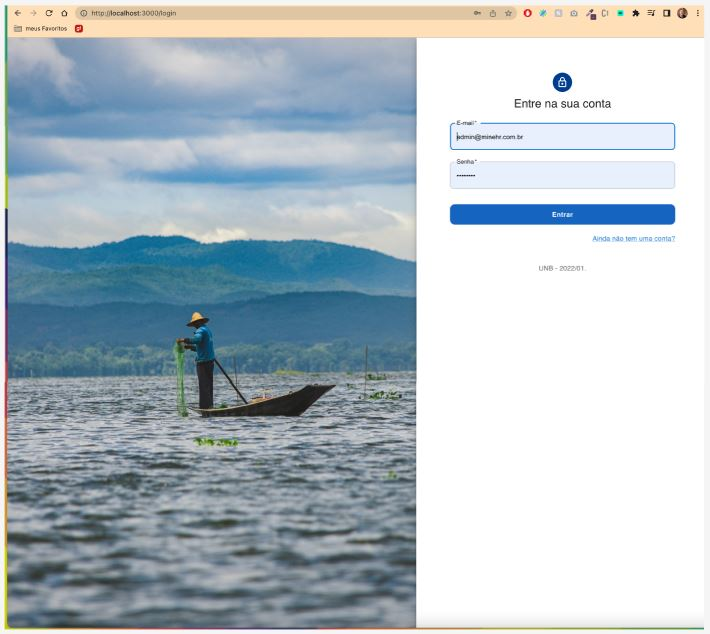
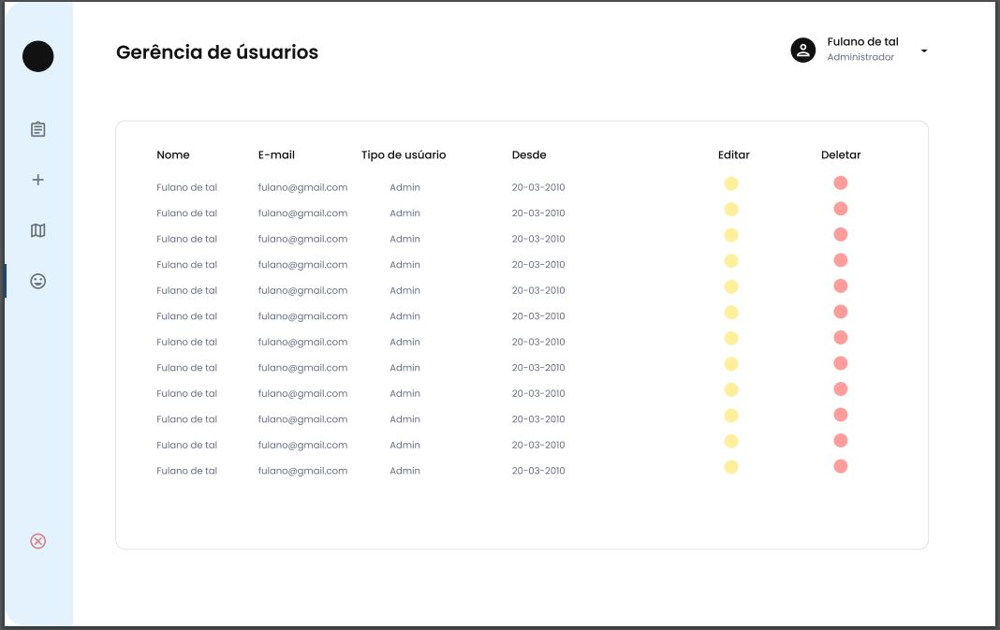
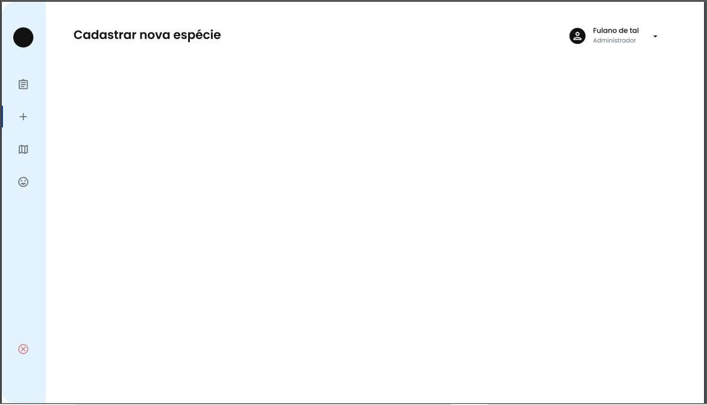
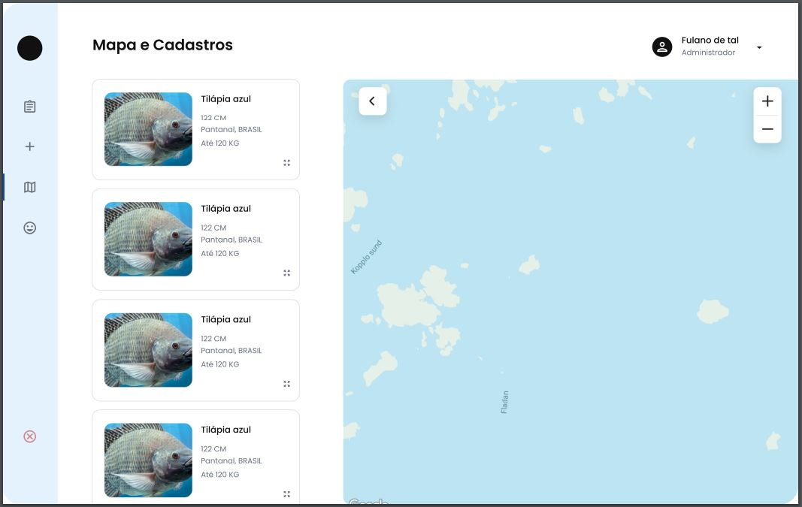
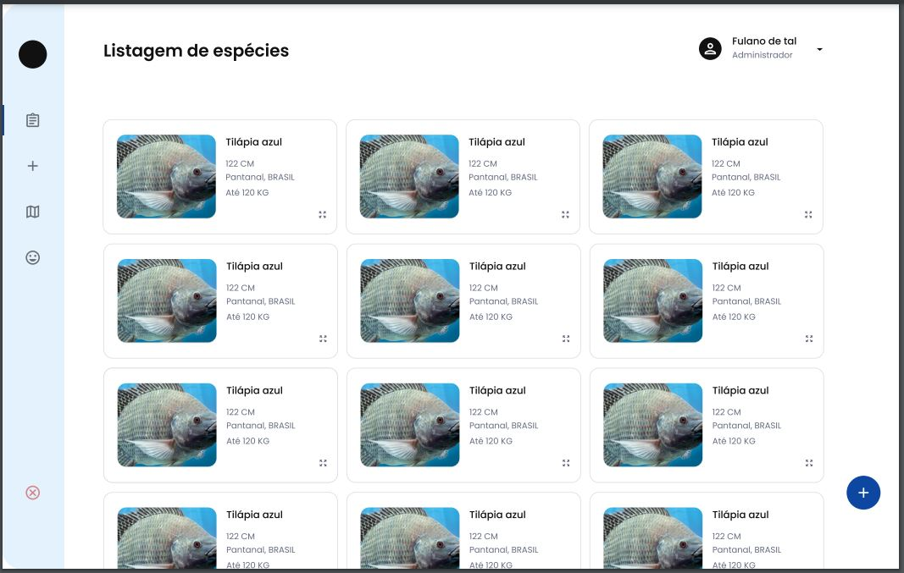

Protótipo de Alta Fidelidade
Histórico de versão
| Data | Versão | Modificação | Autor |
|---|---|---|---|
| 19/07/2022 | 1.0 | Criação do protótipo | Wictor Bastos, Raquel Eucaria e Lucas Ganda |
| 20/07/2022 | 1.1 | Criação do versionamento | Ailamar Alves |
| 21/07/2022 | 1.2 | Adição das imagens | Ailamar Alves |
| 08/08/2022 | 1.3 | Correção do histórico de versão | Lucas Ganda |
Introdução
Um protótipo de alta fidelidade é uma representação interativa do produto, baseada no computador ou em dispositivos móveis. Esse protótipo apresenta maior semelhança com o design final em termos de detalhes e funcionalidade. Foi desenvolvido de acordo com a validação da prototipação de papel pelo cliente.
Objetivo
Esse documento apresenta o protótipo de alta fidelidade para a página web do projeto EuPescador.
Protótipo
Página login

Gerência de usuários

Cadastro das espécies

Mapa de peixes

Lista de peixes

Referências
- TASSIOAUAD. Prototipação. Disponível em: https://tassioauad.com/2017/02/02/prototipacao/. Acesso em: 20 jul. 2022.